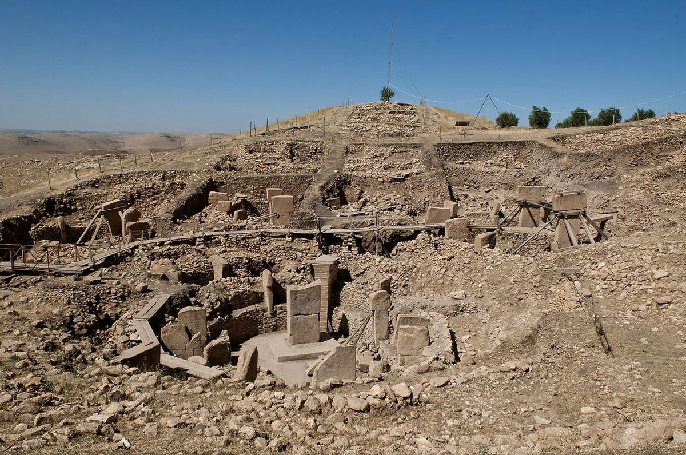
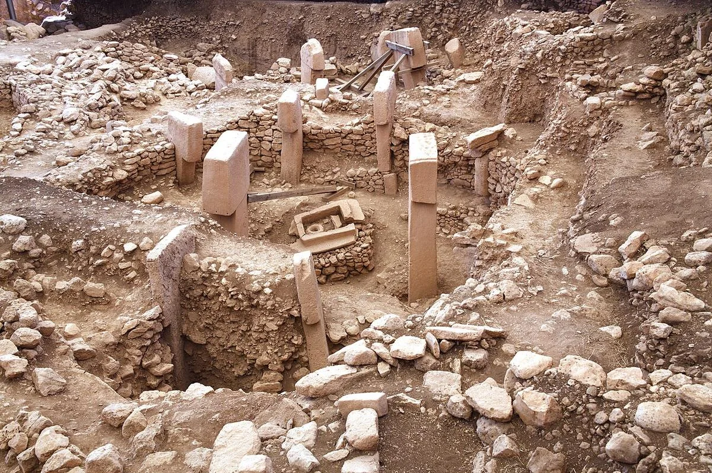
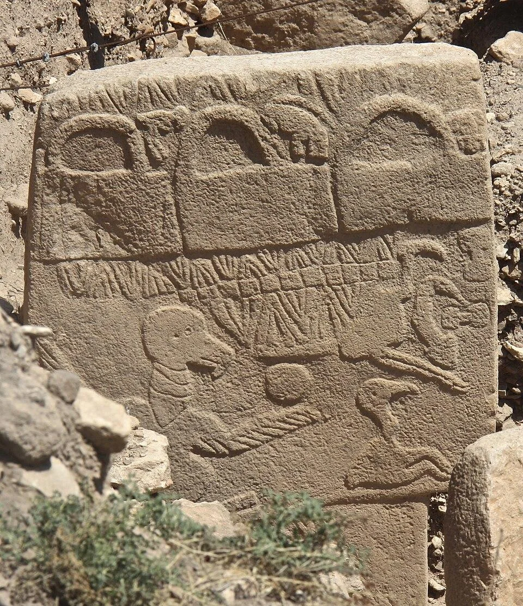
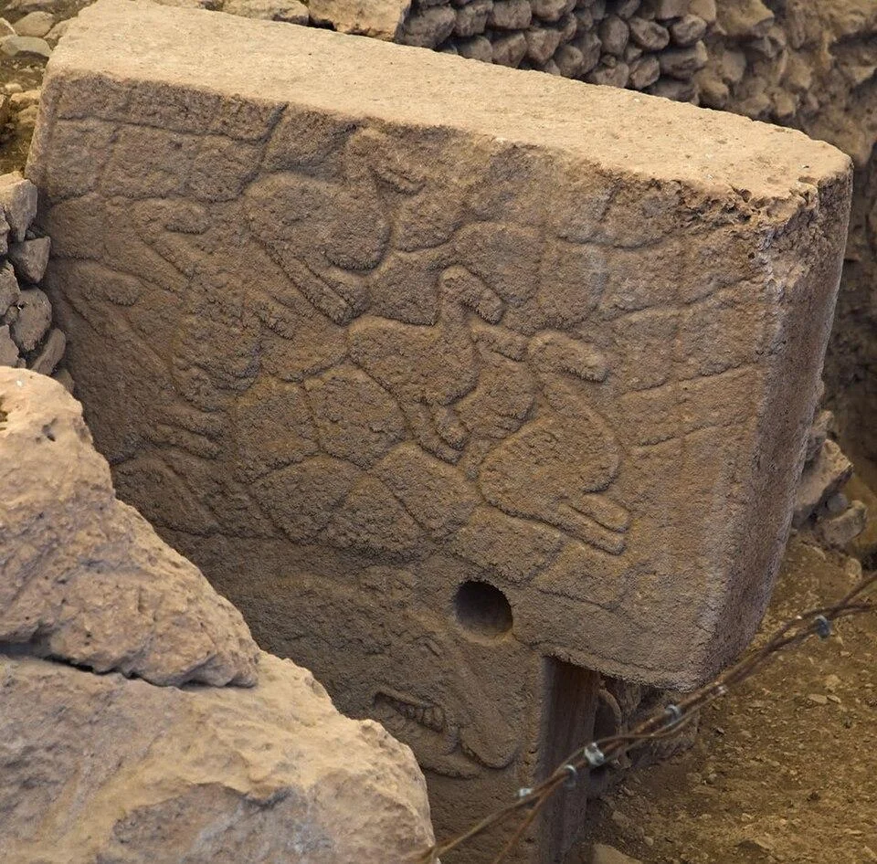
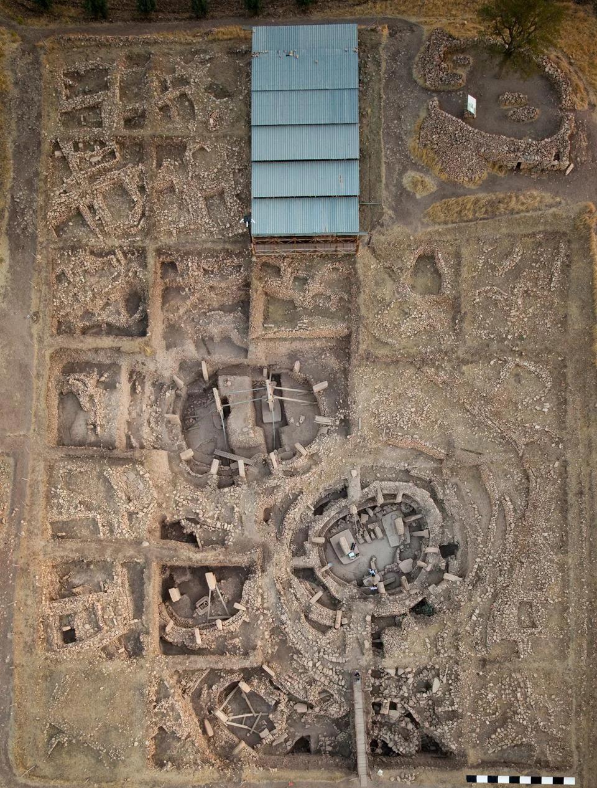

Bir gün arkeologların toprağın altından çıkardığı birkaç taş sütunun, insanlık tarihine dair bildiğimiz en temel hikâyeyi sorgulatacağını söyleseler muhtemelen kimse buna inanmazdı.
Çünkü uzun yıllar boyunca tarihçiler ve arkeologlar insanlığın gelişimini oldukça net bir sırayla açıklıyordu. Önce insanlar tarımı öğrendi. Ardından köyler kurdu. Yerleşik hayata geçti. Nüfus arttı. Toplumlar karmaşık hâle geldi ve sonunda tapınaklar ile anıtsal yapılar ortaya çıktı.
Bu anlatı onlarca yıl boyunca neredeyse tartışmasız kabul edildi.
Ancak Güneydoğu Anadolu'da bulunan bir tepe, bütün bu sıralamayı sorgulanır hâle getirdi.
Şanlıurfa yakınlarında yer alan Göbekli Tepe'de ortaya çıkarılan devasa taş sütunlar yaklaşık 12.000 yıl öncesine tarihleniyordu. Üstelik bu yapılar, tarımın ve yerleşik yaşamın henüz tam olarak ortaya çıkmadığı bir dönemde inşa edilmiş görünüyordu.
Bu durum son derece rahatsız edici bir soruyu gündeme getirdi:
Eğer insanlar henüz çiftçi değilse, böylesine büyük ve karmaşık yapıları kim inşa etmişti?
Daha da önemlisi, onları bunu yapmaya motive eden şey neydi?
Bugün Göbekli Tepe yalnızca dünyanın bilinen en eski anıtsal yapılarından biri olarak görülmüyor. Aynı zamanda insan topluluklarının nasıl örgütlendiği, inanç sistemlerinin nasıl ortaya çıktığı ve uygarlığın temellerinin nasıl atıldığı konularında devam eden tartışmaların merkezinde yer alıyor.
Aradan geçen yıllara rağmen Göbekli Tepe hâlâ bütün sırlarını açıklamış değil. Her yeni kazı sezonu, yeni sorular ortaya çıkarıyor. Üstelik son yıllarda yalnızca Göbekli Tepe değil, Karahan Tepe ve Taş Tepeler Projesi kapsamında ortaya çıkarılan diğer alanlar da bu hikâyeyi daha da büyütüyor.
Peki Göbekli Tepe tam olarak nedir? Neden bu kadar önemlidir? Gerçekten bir tapınak mıydı? Tarımdan önce mi inşa edildi? Ve internette sıkça karşılaşılan uzaylılar, gizli odalar ve saklanan sırlar iddialarının ne kadarı gerçeği yansıtıyor?
Göbekli Tepe Neden İnsanlık Tarihini Sarstı?

Göbekli Tepe'nin dünya çapında bu kadar ses getirmesinin nedeni yalnızca yaşının çok eski olması değildir. Arkeoloji dünyası daha önce de on binlerce yıl öncesine tarihlenen yerleşimler, mağaralar ve insan faaliyetlerine ait izler bulmuştu. Göbekli Tepe'yi farklı kılan şey, burada ortaya çıkarılan yapıların ölçeği ve bu yapıların inşa edildiği dönemin özellikleridir.
20. yüzyıl boyunca hâkim olan görüşe göre karmaşık mimari ancak karmaşık toplumlar tarafından üretilebilirdi. Karmaşık toplumların ortaya çıkabilmesi için ise insanların önce tarımı öğrenmesi, yerleşik yaşama geçmesi ve nüfus fazlası oluşturması gerekiyordu. Bu düşünceye göre anıtsal yapılar, gelişmiş köylerin ve şehirlerin doğal sonucu olarak görülüyordu.
Göbekli Tepe ise bu sıralamayı sorgulayan veriler sundu. Çünkü alandaki en erken yapı evreleri, insanların henüz tam anlamıyla tarım toplumuna dönüşmediği bir döneme tarihlenmektedir. Başka bir ifadeyle burada karşımıza çıkan insanlar, Mezopotamya'nın sonraki şehir devletlerini kuran çiftçiler değil; büyük ölçüde avcılık ve yabani bitki toplama faaliyetleriyle yaşamlarını sürdüren topluluklardı.
İşte asıl şaşkınlık yaratan nokta burada ortaya çıktı. Çünkü bu insanlar yalnızca basit kulübeler yapmamıştı. Tonlarca ağırlığa sahip dev taş sütunları kesmiş, taşımış, şekillendirmiş ve belirli bir plan doğrultusunda yerleştirmişti. Bu durum erken Neolitik toplulukların örgütlenme kapasitesine dair eski varsayımların yeniden değerlendirilmesine neden oldu.
Elbette bugün hiçbir ciddi araştırmacı Göbekli Tepe'nin tek başına bütün tarih kitaplarını geçersiz kıldığını söylemiyor. Ancak alanın ortaya çıkardığı veriler, insan topluluklarının sosyal ve sembolik açıdan düşündüğümüzden çok daha karmaşık olabileceğini gösteriyor. Artık birçok araştırmacı, ekonomik ihtiyaçlar kadar ortak inançların, ritüellerin ve sosyal bağların da büyük ölçekli organizasyonları ortaya çıkarabileceğini kabul ediyor.
Bu nedenle Göbekli Tepe yalnızca bir arkeolojik alan değil, insanlık tarihine nasıl baktığımızı değiştiren bir dönüm noktası olarak görülüyor. Çünkü burada karşımıza çıkan tablo, insanların yalnızca hayatta kalmak için değil, ortak bir anlam etrafında birleşmek için de büyük projeler üretebildiğini gösteriyor.
T Biçimli Sütunlar ve Sembolizmin Dünyası

Göbekli Tepe'nin en dikkat çekici unsurları şüphesiz T biçimli dev sütunlardır. Kazılar sırasında ortaya çıkarılan bu sütunların bazıları beş metreden daha yüksek, on ila yirmi ton arasında değişen ağırlıklara sahiptir. Üstelik bunlar yalnızca kaba taş bloklar değildir. Birçoğunun üzerinde son derece detaylı hayvan kabartmaları ve semboller bulunmaktadır.
İlk bakışta sıradan bir mimari unsur gibi görünen bu sütunların aslında insan biçimini temsil ettiği düşünülmektedir. Bazı sütunlarda görülen kollar, eller ve kemer benzeri detaylar bu yorumu destekler. Bu nedenle araştırmacılar, merkezde yer alan büyük sütunların gerçek insanları, ataları ya da doğaüstü varlıkları temsil etmiş olabileceğini öne sürmektedir. Ancak bu konuda kesin bir görüş birliği bulunmamaktadır.
Sütunlar üzerindeki hayvan figürleri ise ayrı bir araştırma alanı oluşturur. Yılanlar, tilkiler, akbabalar, yaban domuzları, turnalar ve çeşitli vahşi hayvanlar sık sık karşımıza çıkar. İlginç olan nokta, bu hayvanların çoğunun erken Neolitik dönemde insanların günlük yaşamında önemli yer tutmasıdır. Ancak bu figürlerin tam olarak neyi temsil ettiği hâlâ bilinmemektedir.
Bazı araştırmacılar bu sahnelerin mitolojik anlatılarla ilişkili olabileceğini düşünürken, bazıları bunları toplumsal kimliklerin veya farklı grupların sembolleri olarak yorumlamaktadır. Bir başka görüş ise bu figürlerin doğa güçleriyle kurulan ilişkinin görsel yansımaları olduğu yönündedir. Fakat elimizde yazılı kaynaklar bulunmadığı için bu yorumların hiçbiri kesin olarak doğrulanamamaktadır.
Göbekli Tepe'nin büyüleyici yönlerinden biri de tam olarak budur. Mısır piramitlerini anlamamızı sağlayan metinler vardır. Mezopotamya tapınaklarını yorumlamamızı sağlayan yazıtlar vardır. Göbekli Tepe'de ise yalnızca taşlar konuşur. Bu nedenle her yeni buluntu, cevaplardan çok yeni sorular ortaya çıkarır.
Son yıllarda yapılan araştırmalar ise Göbekli Tepe'nin tek başına değerlendirilmemesi gerektiğini göstermeye başladı. Çünkü Şanlıurfa çevresinde ortaya çıkarılan yeni alanlar, bu yapının aslında çok daha büyük bir kültürel dünyanın parçası olabileceğine işaret ediyor.
Karahan Tepe ve Taş Tepeler: Göbekli Tepe Aslında Daha Büyük Bir Hikâyenin Parçası mı?

Göbekli Tepe ilk kez dünya gündemine girdiğinde birçok araştırmacı onu sıra dışı bir istisna olarak değerlendirdi. Çünkü bilinen arkeolojik tablo içinde bu kadar erken bir tarihte inşa edilmiş böylesine anıtsal yapılarla karşılaşmak beklenmiyordu. Uzun süre boyunca Göbekli Tepe'nin benzersiz bir merkez olduğu düşünüldü. Ancak son yıllarda yürütülen araştırmalar, hikâyenin bundan çok daha büyük olabileceğini gösteriyor.
Özellikle Şanlıurfa ve çevresinde gerçekleştirilen çalışmalar, Göbekli Tepe'nin tek başına var olan izole bir kutsal alan olmadığını ortaya koymaya başladı. Karahan Tepe, Sayburç, Sefertepe, Çakmaktepe ve diğer yerleşimler üzerinde yapılan kazılar, bölgenin MÖ 10. ve 9. binyıllarda yoğun bir insan faaliyet alanı olduğunu gösteriyor. Bu yerleşimlerin tamamı bugün "Taş Tepeler" olarak adlandırılan geniş araştırma projesi kapsamında inceleniyor.
Bu keşiflerin en dikkat çekici olanı ise hiç şüphesiz Karahan Tepe'dir.
Karahan Tepe'de ortaya çıkarılan buluntular, birçok açıdan Göbekli Tepe ile benzerlik göstermektedir. Burada da T biçimli sütunlar, anıtsal yapılar ve güçlü sembolik unsurlar bulunmuştur. Ancak bazı keşifler Göbekli Tepe'den farklı özellikler de taşımaktadır. Özellikle insan figürlerinin daha belirgin şekilde işlenmiş olması ve bazı yapıların mimari özellikleri, araştırmacıların dikkatini çekmiştir.
Bu durum son derece önemli bir sonucu beraberinde getiriyor. Eğer Göbekli Tepe yalnızca tek bir merkez değilse, o zaman karşımızda tek bir kutsal alan değil, aynı kültürel dünyanın farklı parçaları bulunuyor olabilir. Başka bir ifadeyle, yaklaşık 12.000 yıl önce Güneydoğu Anadolu'da düşündüğümüzden çok daha karmaşık bir sosyal ağın var olmuş olması mümkündür.
Bugün araştırmacıların önemli bir kısmı, Göbekli Tepe'yi çevresindeki diğer yerleşimlerden bağımsız değerlendirmemek gerektiği görüşündedir. Çünkü yeni keşifler arttıkça, bölgedeki insanların yalnızca küçük avcı-toplayıcı gruplardan oluşmadığı anlaşılmaktadır. Bu topluluklar arasında bilgi paylaşımı, ortak semboller ve muhtemelen ortak ritüeller bulunuyordu.
Göbekli Tepe'nin önemi bu nedenle azalmıyor. Tam tersine daha da büyüyor. Çünkü artık onu tek başına açıklamaya çalışmak yerine, erken Neolitik dönemin geniş kültürel dünyası içinde değerlendirmek gerekiyor. Karahan Tepe ve diğer yerleşimler sayesinde araştırmacılar yalnızca bir yapıyı değil, bütün bir uygarlık öncesi düşünce sistemini anlamaya çalışıyor.
Ancak Göbekli Tepe'nin popülerliği arttıkça, bilimsel tartışmaların yanında farklı iddialar da ortaya çıkmaya başladı. Özellikle sosyal medyada ve çeşitli internet sitelerinde alanla ilgili çok sayıda spekülasyon dolaşıyor. Gizli tünellerden uzaylı teorilerine kadar uzanan bu iddiaların bazıları milyonlarca kişi tarafından paylaşılmasına rağmen, arkeolojik veriler çoğu zaman çok farklı bir tablo ortaya koyuyor.
Göbekli Tepe Hakkındaki Gizemler ve Komplo Teorileri

Göbekli Tepe'nin dünyanın en çok konuşulan arkeolojik alanlarından biri hâline gelmesi, beraberinde çok sayıda spekülasyonu da getirdi. Bunun temel nedeni aslında anlaşılabilir bir durumdur. Çünkü elimizde son derece eski bir yapı kompleksi vardır ve bu yapıların tam olarak hangi amaçla kullanıldığını hâlâ bilmiyoruz. İnsan zihni ise bilinmeyen alanları açıklamak için doğal olarak farklı senaryolar üretmeye eğilimlidir.
İnternette en sık karşılaşılan iddialardan biri, Göbekli Tepe'nin altında henüz açıklanmayan gizli odalar veya büyük yeraltı kompleksleri bulunduğu yönündedir. Bu iddiaların ortaya çıkmasında jeofizik araştırmaların etkisi olmuştur. Çünkü alanda yapılan radar ve tarama çalışmaları, kazılmamış bölgelerde yeni yapıların bulunabileceğine işaret etmektedir.
Ancak burada önemli bir ayrıntı vardır. Arkeologların "henüz kazılmamış yapı" demesi ile internette dolaşan "saklanan gizli şehir" iddiaları aynı şey değildir. Göbekli Tepe'nin büyük bölümü gerçekten kazılmamıştır ve gelecekte yeni yapılar ortaya çıkabilir. Fakat bugün için bilim insanlarının elinde dev yeraltı şehirlerini veya bilinçli şekilde gizlenen odaları doğrulayan bir veri bulunmamaktadır.
Bir diğer popüler iddia ise Göbekli Tepe'nin uzaylılarla ilişkili olduğu yönündedir. Bu görüşü savunanlar, erken Neolitik insanların böylesine büyük taş blokları hareket ettiremeyeceğini veya bu ölçekte sembolik yapılar üretemeyeceğini ileri sürmektedir.
Ancak arkeolojik veriler bu iddiayı desteklememektedir. Çünkü Göbekli Tepe'deki taşların çıkarıldığı ocaklar bulunmuştur. Taş işleme teknikleri incelenmiştir. Sütunların üretim aşamalarına dair izler tespit edilmiştir. Başka bir deyişle araştırmacılar, yapıların insan eliyle nasıl üretildiğini gösteren somut kanıtlara sahiptir. Ortada açıklanamayan bir teknoloji değil, zaman ve emek gerektiren olağanüstü bir insan başarısı bulunmaktadır.
Aslında Göbekli Tepe'nin etkileyici olması için uzaylılara ihtiyaç yoktur. Tam tersine, alanı bu kadar önemli yapan şey tamamen insanlara ait olmasıdır. Çünkü burada gördüğümüz şey, yazının olmadığı, metal aletlerin bulunmadığı ve şehirlerin henüz ortaya çıkmadığı bir dönemde insanların ortak bir amaç doğrultusunda bir araya gelebilmiş olmasıdır.
Belki de Göbekli Tepe'nin gerçek gizemi taşların kendisinde değil, onları dikmeye karar veren insanların zihnindedir. Araştırmacıların bugün hâlâ cevap aradığı temel soru da budur: Bu insanlar neden burada toplandı ve onları böylesine büyük bir proje için motive eden şey neydi?
Bu sorunun cevabı bizi doğrudan Göbekli Tepe hakkında yürütülen en büyük akademik tartışmaya götürüyor. Çünkü alanın keşfinden bu yana araştırmacılar arasında aynı soru konuşuluyor: Tarımı insanlar mı geliştirdi, yoksa ortak inançlar ve ritüeller insanları tarıma yönelten asıl güç müydü?
Tarımı İnsanlar mı Geliştirdi, Yoksa Ritüeller mi Tarımı Doğurdu?

Göbekli Tepe'nin arkeoloji dünyasında bu kadar büyük bir etki yaratmasının en önemli nedenlerinden biri, insanlık tarihinin en temel sorularından birini yeniden tartışmaya açmış olmasıdır. Uzun yıllar boyunca kabul gören görüşe göre süreç oldukça basitti. İnsanlar önce tarımı keşfetmiş, ardından yerleşik hayata geçmiş ve ortaya çıkan nüfus artışı ile birlikte daha karmaşık toplumsal yapılar geliştirmişti. Tapınaklar, anıtsal yapılar ve organize ritüeller ise bu sürecin doğal sonucu olarak görülüyordu.
Göbekli Tepe ise bu sıralamanın her zaman geçerli olmayabileceğini düşündürdü.
Çünkü burada karşımıza çıkan anıtsal mimari, tarımın henüz tam anlamıyla yerleşmediği bir döneme tarihlenmektedir. Bu durum bazı araştırmacıları farklı bir ihtimal üzerinde düşünmeye yöneltti. Belki de insanlar önce tarım yaptığı için büyük topluluklar oluşturmadı. Belki de büyük topluluklar oluşturma ihtiyacı, tarımın gelişmesini hızlandırdı.
Bu görüşe göre Göbekli Tepe gibi merkezlerde düzenli olarak bir araya gelen yüzlerce insanın beslenmesi gerekiyordu. Büyük toplantılar, ritüeller ve ortak etkinlikler ciddi miktarda yiyecek gerektiriyordu. Böyle bir ihtiyacın ortaya çıkması, yabani tahılların daha sistemli biçimde kullanılmasını ve zamanla tarıma dönüşecek süreçlerin hızlanmasını sağlamış olabilir.
Elbette bu görüşün kesin olarak kanıtlandığını söylemek mümkün değildir. Arkeolojide nadiren bu kadar net cevaplar bulunur. Ancak Göbekli Tepe sayesinde artık Neolitik Devrim yalnızca ekonomik bir dönüşüm olarak değerlendirilmiyor. İnsanların ortak inançlar, semboller ve ritüeller etrafında örgütlenmesinin de bu süreçte önemli rol oynamış olabileceği kabul ediliyor.
Bugün birçok araştırmacı daha dengeli bir yaklaşımı tercih etmektedir. Buna göre tarım, çevresel değişimler, nüfus baskısı, sosyal ilişkiler ve sembolik davranışlar gibi birçok farklı unsurun bir araya gelmesiyle ortaya çıktı. Göbekli Tepe de bu karmaşık dönüşümün en önemli parçalarından biri olarak görülüyor.
Aslında bu tartışmanın kendisi bile Göbekli Tepe'nin neden bu kadar önemli olduğunu göstermektedir. Çünkü burada bulunan taşlar yalnızca geçmişteki insanların ne yaptığını değil, neden yaptığını da sorgulamamıza neden oluyor. İnsanlık tarihinin en büyük dönüşümlerinden biri olan yerleşik yaşama geçiş süreci, Göbekli Tepe sayesinde çok daha geniş bir perspektiften değerlendirilmeye başlanmıştır.
Güncel Kazılar Bize Ne Söylüyor?
Göbekli Tepe hakkında kamuoyunda oluşan algının aksine, hikâye tamamlanmış değildir. Hatta birçok araştırmacıya göre asıl hikâye yeni başlamaktadır. Bunun nedeni, alanın tamamının henüz kazılmamış olmasıdır.
Kazı çalışmalarının başladığı günden bu yana ortaya çıkarılan yapılar büyük ilgi görse de, araştırmacılar Göbekli Tepe'nin önemli bir bölümünün hâlâ toprak altında bulunduğunu belirtmektedir. Modern arkeoloji artık yalnızca kazma ve kürekle ilerlemiyor. Jeofizik taramalar, yer radarı sistemleri ve çeşitli görüntüleme teknikleri sayesinde kazı yapılmadan önce toprağın altındaki olası yapılar hakkında bilgi edinilebiliyor.
Bu çalışmalar, Göbekli Tepe'de gelecekte ortaya çıkarılabilecek yeni yapıların bulunduğuna işaret ediyor. Ancak bilim insanlarının yaklaşımı son derece temkinli. Çünkü arkeolojide her yeni bulgu, beraberinde yeni sorular da getiriyor. Bir yapının varlığını tespit etmek ile onun ne amaçla kullanıldığını anlamak aynı şey değildir.
Son yıllarda dikkat çeken bir başka gelişme ise Göbekli Tepe'nin artık tek başına değerlendirilmemesidir. Taş Tepeler Projesi kapsamında yürütülen çalışmalar sayesinde araştırmacılar, bölgenin bütüncül bir kültürel sistem olarak incelenmesine yönelmiştir. Karahan Tepe başta olmak üzere yeni keşfedilen alanlar, Göbekli Tepe'nin çevresinde gelişen dünyayı anlamamıza yardımcı oluyor.
Bu nedenle günümüzde araştırmacılar yalnızca tek bir kazı alanına değil, yaklaşık 12.000 yıl önce Güneydoğu Anadolu'da yaşayan insanların oluşturduğu geniş kültürel ağın tamamına odaklanmaktadır. Her yeni buluntu, erken Neolitik döneme dair bilgimizi biraz daha genişletiyor ve geçmişe ilişkin eski varsayımların yeniden gözden geçirilmesine neden oluyor.
Göbekli Tepe'nin en ilginç yönlerinden biri de budur. Aradan geçen on yıllara rağmen önemini kaybetmemiş, aksine her yeni araştırmayla daha da önemli hâle gelmiştir. Çünkü burada ortaya çıkan her veri, insanlık tarihinin en erken dönemlerine ilişkin anlayışımızı geliştirmeye devam etmektedir.
Sonuç: Göbekli Tepe'nin Asıl Önemi Nedir?
Göbekli Tepe hakkında konuşurken çoğu zaman dev taş sütunlardan, gizemli kabartmalardan veya etkileyici tarihlerden söz edilir. Bunların her biri gerçekten dikkat çekicidir. Ancak alanın asıl önemi yalnızca yaşında ya da mimarisinde yatmaz.
Göbekli Tepe'nin en büyük katkısı, insanlık tarihine dair sorduğumuz soruları değiştirmiş olmasıdır.
Bir zamanlar araştırmacılar erken avcı-toplayıcı toplulukları küçük ve basit gruplar olarak tasvir ediyordu. Göbekli Tepe ise bu insanların düşündüğümüzden çok daha karmaşık sosyal ilişkiler kurabildiğini, büyük projeler organize edebildiğini ve ortak semboller etrafında birleşebildiğini gösterdi. Bu nedenle alan yalnızca bir arkeolojik keşif değil, insanın toplumsal doğasına dair önemli bir kanıt olarak görülmektedir.
Bugün elimizde bütün cevaplar yoktur. Göbekli Tepe'deki sembollerin tamamını çözebilmiş değiliz. Yapıların her ayrıntısını anlamış değiliz. Burada gerçekleştirilen ritüellerin tam olarak nasıl olduğunu da bilmiyoruz. Ancak bilimsel araştırmalar ilerledikçe tablo giderek netleşiyor. Ortaya çıkan veriler, bu yapıları inşa eden insanların sanılandan çok daha örgütlü, yaratıcı ve sembolik düşünceye sahip topluluklar olduğunu gösteriyor.
Belki de Göbekli Tepe'nin gerçek değeri burada yatmaktadır. Çünkü bu alan bize yalnızca geçmişi anlatmaz. Aynı zamanda insan olmanın ne anlama geldiğine dair sorular da sordurur. İnsanlar ne zaman ortak anlamlar üretmeye başladı? Ne zaman büyük topluluklar hâlinde hareket etmeyi öğrendi? Ne zaman çevrelerini değiştirecek kadar güçlü bir sosyal organizasyon kurabildi?
Bu soruların kesin cevapları hâlâ araştırılıyor. Ancak bugün bildiğimiz bir şey var: Şanlıurfa yakınlarındaki bu tepe, insanlık tarihinin en önemli arkeolojik keşiflerinden biri olmaya devam ediyor. Ve büyük ihtimalle önümüzdeki yıllarda da bize yeni sorular sormayı sürdürecek.
Sık Sorulan Sorular
Göbekli Tepe kaç yıllıktır?
Göbekli Tepe'nin en erken yapıları yaklaşık MÖ 9600–9500 yıllarına tarihlendirilmektedir. Bu da alanın günümüzden yaklaşık 11.500–12.000 yıl öncesine uzandığını göstermektedir.
Göbekli Tepe dünyanın en eski tapınağı mı?
Bu konuda dikkatli olmak gerekir. Göbekli Tepe uzun yıllar boyunca "dünyanın en eski tapınağı" olarak tanıtılmıştır. Ancak günümüzde birçok araştırmacı, alanı doğrudan tapınak olarak tanımlamak yerine ritüel ve törensel işlevlere sahip anıtsal bir merkez olarak değerlendirmeyi tercih etmektedir.
Göbekli Tepe'de insanlar yaşıyor muydu?
Bugüne kadar elde edilen veriler, Göbekli Tepe'nin esas olarak ritüel amaçlarla kullanılan bir merkez olduğunu düşündürmektedir. Kalıcı yerleşim izleri sınırlıdır. Ancak alanı kullanan toplulukların çevredeki yerleşimlerde yaşamış olması muhtemeldir.
Göbekli Tepe ile Karahan Tepe arasındaki fark nedir?
Her iki alan da Taş Tepeler kültürel ağının parçası olarak değerlendirilmektedir. Göbekli Tepe daha erken keşfedilmiş ve dünya çapında tanınmıştır. Karahan Tepe ise son yıllarda ortaya çıkarılan buluntular sayesinde erken Neolitik döneme ilişkin yeni bilgiler sunmaktadır. Araştırmacılar her iki alanın birbirini tamamlayan veriler sağladığını düşünmektedir.
Göbekli Tepe'nin tamamı kazıldı mı?
Hayır. Arkeologlar, alanın önemli bir bölümünün hâlâ toprak altında bulunduğunu belirtmektedir. Bu nedenle gelecekte yapılacak çalışmaların yeni yapılar ve yeni bilgiler ortaya çıkarması beklenmektedir.
Göbekli Tepe gerçekten tarımdan önce mi inşa edildi?
Mevcut radyokarbon tarihleme sonuçları, Göbekli Tepe'nin en erken evrelerinin tarımın tam anlamıyla yerleşmesinden önceye tarihlendiğini göstermektedir. Bu durum, alanın arkeoloji dünyasında bu kadar önemli olmasının temel nedenlerinden biridir.
Göbekli Tepe'de gizli odalar veya saklanan yapılar var mı?
Jeofizik araştırmalar, henüz kazılmamış alanlarda yeni yapıların bulunabileceğini göstermektedir. Ancak bilimsel veriler, internette dolaşan dev yeraltı şehirleri veya gizlenen sırlar iddialarını doğrulamamaktadır.
Göbekli Tepe'yi uzaylılar mı yaptı?
Hayır. Bugüne kadar elde edilen arkeolojik veriler, yapıların insan toplulukları tarafından inşa edildiğini göstermektedir. Taş ocakları, işleme izleri ve inşa süreçlerine ilişkin kanıtlar araştırmacılar tarafından ayrıntılı biçimde belgelenmiştir.
Kaynakça
Schmidt, Klaus. Göbekli Tepe: A Stone Age Sanctuary in South-Eastern Anatolia. ex oriente, 2012.
Schmidt, Klaus. Sie bauten die ersten Tempel: Das rätselhafte Heiligtum der Steinzeitjäger. C.H. Beck, 2006.
Dietrich, Oliver; Notroff, Jens; Schmidt, Klaus. "The Role of Cult and Feasting in the Emergence of Neolithic Communities." Neo-Lithics Journal.
Notroff, Jens; Dietrich, Oliver; Clare, Lee. Göbekli Tepe and the Early Neolithic of Upper Mesopotamia. German Archaeological Institute Publications.
Hodder, Ian. The Neolithic Revolution and Human Origins. Thames & Hudson.
Mithen, Steven. After the Ice: A Global Human History 20,000–5,000 BC. Harvard University Press.
Watkins, Trevor. The Neolithic Revolution in Southwest Asia. Oxford University Press.
Cauvin, Jacques. The Birth of the Gods and the Origins of Agriculture. Cambridge University Press.
Peters, Joris; Schmidt, Klaus. "Animals in the Symbolic World of Pre-Pottery Neolithic Göbekli Tepe." Anthropozoologica.
German Archaeological Institute (DAI) – Göbekli Tepe Research Archive.
UNESCO World Heritage Centre – Göbekli Tepe Documentation.
Şanlıurfa Neolithic Research Project (Taş Tepeler Projesi) Resmî Yayınları.
T.C. Kültür ve Turizm Bakanlığı – Göbekli Tepe ve Taş Tepeler Projesi Raporları.
Türk Tarih Kurumu Yayınları – Neolitik Dönem Anadolu Araştırmaları.